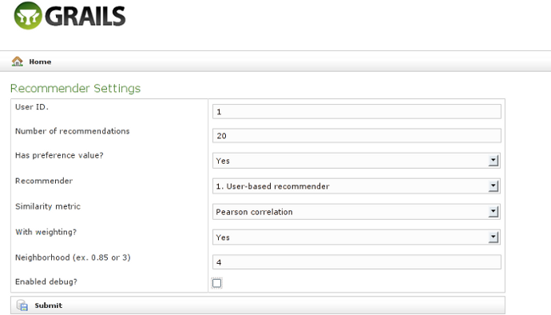
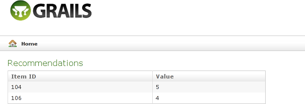

Mahout Recommender Plugin - Reference Documentation
Authors: Lim Chee Kin
Version: 0.5
Table of Contents
1 Introduction to Mahout Recommender plugin
The Mahout Recommender plugin enabled you to use Apache Mahout recommendation algorithms in your Grails project. With the plugin, you can find an effective recommender, evaluating precision and recall, and evaluating the performance of the selected recommender without writing single line of code.Then, the selected recommender can be enabled by configuration and used by your application instantly.You only need to write custom recommender when out-of-the-box recommenders doesn't meet your application-specific requirements.1.1 Change Log
18-Dec-2011 0.5- First release of the plugin.
- Included Apache Mahout 0.5 jar files.
- Introduced command line: average-diff-evaluator, create-table, import-data, install-libimseti-sample-app, irstats-evaluator, load-runner, recommender and uninstall-libimseti-sample-app.
- Introduced recommender controller (port of RecommenderServlet) and web-based recommenders' evaluator.
2 Getting Started
Install the plugin into your project with the following command:grails install-plugin mahout-recommender
// Added by the Mahout Recommender plugin: mahout.recommender.mode = 'input' // 'input', 'config' or 'class'
3 Configuration
The plugin support both the file data model and MySQL data model.For file data model, no additional configuration is required to make use of command line tool of the plugin, but the data file must be located in classpath such asgrails-app/conf
and data file name must be specified in mahout.recommender.data.file for web-based tools such as
recommenders' evaluator and recommender.For MySQL data model, change mahout.recommender.data.model from 'file' to 'mysql'
and configure the DataSource.groovy properly.
3.1 Basic Configuration
The following table described configuration items inConfig.groovy supported by the plugin:
- Item 10 to 21 below only applicable when
mahout.recommender.data.model = 'mysql' - MahoutRecommenderConstants = org.grails.mahout.recommender.MahoutRecommenderConstants
- AbstractJDBCDataModel = org.apache.mahout.cf.taste.impl.model.jdbc.AbstractJDBCDataModel
- AbstractJDBCDiffStorage = org.apache.mahout.cf.taste.impl.recommender.slopeone.jdbc.AbstractJDBCDiffStorage
| No. | Configuration Item | Description |
|---|---|---|
| 1. | mahout.recommender.mode | Specify mode to determine recommender to be used. Default value is 'input' specified in MahoutRecommenderConstants.DEFAULT_MODE. Valid values: 'input', 'config' or 'class'. In 'input' mode, user need to specify value for item 5 to 9 below on screen. In 'config' mode, it will take values configured in item 5 to 9 below. In 'class' mode, it will take value specified in mahout.recommender.builderClass. |
| 2. | mahout.recommender.data.model | Specify which data model to be used. Default value is 'file' specified in MahoutRecommenderConstants.DEFAULT_DATA_MODEL. Valid values: 'file' or 'mysql'. When the value is 'file'data file name must be specified in mahout.recommender.data.file for web-based tools such as recommenders' evaluator and recommender. |
| 3. | mahout.recommender.data.file | Data file to be loaded by FileDataModel. Default value is 'data.csv' specified in MahoutRecommenderConstants.DEFAULT_DATA_FILE. The data file specified must me located in classpath such as grails-app/config. |
| 4. | mahout.recommender.builderClass | Recommender to be loaded when mahout.recommender.mode is 'class'. Value specified must be full class name of the class that implements org.apache.mahout.cf.taste.eval.RecommenderBuilder such as 'mia.recommender.ch05.LibimsetiRecommenderBuilder'. |
| 5. | mahout.recommender.hasPreference | Specify "has preference value" when mahout.recommender.mode is 'config'. Valid values: true or false. |
| 6. | mahout.recommender.selected | Specify recommender when mahout.recommender.mode is 'config'. Valid values: 1, 2 or 3 (1. user-based, 2. item-based or 3. slope-one). |
| 7. | mahout.recommender.similarity | Specify similarity metric when mahout.recommender.mode is 'config'. Valid values: 'PearsonCorrelation', 'EuclideanDistance', 'LogLikelihood' or 'TanimotoCoefficient'. |
| 8. | mahout.recommender.withWeighting | Specify whether weighting is enabled when mahout.recommender.mode is 'config'. Valid values: true or false. Applicable to 'PearsonCorrelation' or 'EuclideanDistance' similarity metric or Slope-one recommender only. |
| 9. | mahout.recommender.neighborhood | Specify whether fix-size neighborhood or threshold-based neighborhood to be used when mahout.recommender.mode is 'config' and user-based recommender is selected. Integer value for fix-size neighborhood such as 4 and decimal value (< 1.0) for threshold-based neighborhood such as 0.5. |
| 10. | mahout.recommender.preference.table | Overwrite default value 'taste_preferences' specified in AbstractJDBCDataModel.DEFAULT_PREFERENCE_TABLE. |
| 11. | mahout.recommender.preference.userIdColumn | Overwrite default value 'user_id' specified in AbstractJDBCDataModel.DEFAULT_USER_ID_COLUMN. |
| 12. | mahout.recommender.preference.itemIdColumn | Overwrite default value 'item_id' specified in AbstractJDBCDataModel.DEFAULT_ITEM_ID_COLUMN. |
| 13. | mahout.recommender.preference.valueColumn | Overwrite default value 'preference' specified in AbstractJDBCDataModel.DEFAULT_PREFERENCE_COLUMN. |
| 14. | mahout.recommender.preference.timestampColumn | Overwrite default value 'last_updated' specified in MahoutRecommenderConstants.DEFAULT_PREFERENCE_TIME_COLUMN. |
| 15. | mahout.recommender.slopeone.diffs.table | Overwrite default value 'taste_slopeone_diffs' specified in AbstractJDBCDiffStorage.DEFAULT_DIFF_TABLE. |
| 16. | mahout.recommender.slopeone.diffs.itemIDAColumn | Overwrite default value 'item_id_a' specified in AbstractJDBCDiffStorage.DEFAULT_ITEM_A_COLUMN. |
| 17. | mahout.recommender.slopeone.diffs.itemIDBColumn | Overwrite default value 'item_id_b' specified in AbstractJDBCDiffStorage.DEFAULT_ITEM_B_COLUMN. |
| 18. | mahout.recommender.slopeone.diffs.countColumn | Overwrite default value 'count' specified in AbstractJDBCDiffStorage.DEFAULT_COUNT_COLUMN. |
| 19. | mahout.recommender.slopeone.diffs.avgColumn | Overwrite default value 'average_diff' specified in AbstractJDBCDiffStorage.DEFAULT_AVERAGE_DIFF_COLUMN. |
| 20. | mahout.recommender.slopeone.diffs.stdevColumn | Overwrite default value 'standard_deviation' specified in AbstractJDBCDiffStorage.DEFAULT_STDEV_COLUMN. |
| 21. | mahout.recommender.slopeone.diffs.minDiffCount | Overwrite default value 2 specified in MahoutRecommenderConstants.DEFAULT_SLOPEONE_DIFFS_MIN_COUNT. |
| 22. | mahout.recommender.evaluator.trainingPercentage | Overwrite default value 0.7 specified in MahoutRecommenderConstants.DEFAULT_TRAINING_PERCENTAGE. |
| 23. | mahout.recommender.evaluator.evaluationPercentage | Overwrite default value 1.0 specified in MahoutRecommenderConstants.DEFAULT_EVALUATION_PERCENTAGE. |
3.2 The MySQL Data Model
The plugin is using file data model by default, this section will described step-by-step of how to setup your project to use MySQL data model with assumption that MySQL database is pre-installed and started in your development workstation.Steps to setup Mahout Recommendation Plugin with MySQL database
Create Recommender Database in MySQL
- Login to MySQL using command below:
mysql -u root
- Create recommender database using command below:
create database recommender
Download and Setup MySQL Connector/J (JDBC Driver)
- Download latest MySQL Connector/J at http://www.mysql.com/downloads/connector/j/.
- Extract the downloaded compressed file and copy the mysql-connector-java-5.1.x-bin.jar to lib directory of your grails application.
Update Config.groovy
- Update
mahout.recommender.data.modelingrails-app/conf/Config.groovyfrom 'file' to 'mysql', for example:
mahout.recommender.data.model = 'mysql' // 'file' or 'mysql'
Update Datasource.groovy
- Update database configurations in
grails-app/conf/DataSource.groovyfrom HSQL or H2 to MySQL, for example:
dataSource {
pooled = true
driverClassName = "com.mysql.jdbc.Driver"
username = "root"
password = ""
}
hibernate {
cache.use_second_level_cache = true
cache.use_query_cache = true
cache.provider_class = 'net.sf.ehcache.hibernate.EhCacheProvider'
}
// environment specific settings
environments {
development {
dataSource {
dbCreate = "create-drop" // one of 'create', 'create-drop','update'
url = "jdbc:mysql://localhost:3306/recommender"
}
}
test {
dataSource {
dbCreate = "create-drop"
url = "jdbc:mysql://localhost:3306/recommender"
}
}
production {
dataSource {
dbCreate = "update"
url = "jdbc:mysql://localhost:3306/recommender"
}
}
}4 The Command Line
The command line tools of the plugin can be divided to the following categories:Recommender
All commands below using the common input process with additional command-specific input.Database
Libimseti Sample Application
5 The Recommender Controller
The recommender controller is enhanced version of mahout's RecommenderServlet implementation. It included a web-based recommenders' evaluator to enabled user to find an effective recommender.5.1 Web-based Recommenders' Evaluator
The web-based recommenders' evaluator supports user to evaluate recommenders' effectiveness by average difference. Recommenders under evaluation including user-based recommender, item-based recommender and slope-one recommender with different type of similarity metrics such as pearson correlation, euclidean distance, Log-likelihood and tanimoto coefficient.By access to http://localhost:8080/<yourApplication>/recommender/evaluator in your browser, you will see a screen similar to the following image: Start running the evaluation process by click on "Run Evaluator" link.
Start running the evaluation process by click on "Run Evaluator" link.
5.2 Web-based Recommender
The web-based recommender supports user to test recommender using web user interface with or without debug-enabled.By access to http://localhost:8080/<yourApplication>/recommender/settings in your browser, you will see a screen similar to the following image:After fill-in all required fields, click on "Submit" button to see the recommendations.You can checked the check box of "Enabled debug?" to see the recommendation results with more debugging information.
Recommendations Without Debug-enabled
Recommendations With Debug-enabled

5.2.1 REST Support
Besides display the recommendation results in HTML format, the web-based recommender support return the results in XML and JSON format too.XML Recommended Items
By access to the following URL in your browser:http://localhost:8080/<yourApplication>/recommender.xml?userID=1&howMany=20& r=1&p=true&s=PearsonCorrelation&w=true&n=4
<recommendedItems> <item> <value>5.0</value> <id>104</id> </item> <item> <value>4.0</value> <id>106</id> </item> </recommendedItems>
<error> <message>Recommender cannot be blank.</message> </error>
JSON Recommended Items
By access to the following URL in your browser:http://localhost:8080/<yourApplication>/recommender.json?userID=1&howMany=20& r=1&p=true&s=PearsonCorrelation&w=true&n=4
The URL above is identical to the XML request, except it invoke toYou will see JSON message similar to the below display in your browserrecommender.jsoninstead ofrecommender.xml.
{"recommendedItems":[{"value":5,"id":104},{"value":4,"id":106}]}{"error":{"message":"Recommender cannot be blank."}}Usage
http://localhost:8080/<yourApplication>/recommender.[json|xml]? userID=[Long]&howMany=[Integer]&r=[1|2|3]&p=[true|false]& s=[PearsonCorrelation|EuclideanDistance|LogLikelihood|TanimotoCoefficient]& w=[true|false]&n=[Integer|Double]
- File extension:
recommender.xmlfor XML request,recommender.jsonfor JSON request. userID: Specify user ID. in numeric value as java.lang.Long type.howMany: Specify expected number of recommendations return in numeric value as java.lang.Integer type.r: Specify recommender. Valid values: 1, 2 or 3 (1. user-based, 2. item-based or 3. slope-one).p: Specify "has preference value". Valid values: true or false.s: Specify similarity metric. Valid values: PearsonCorrelation, EuclideanDistance, LogLikelihood or TanimotoCoefficient.w: Specify whether weighting is enabled. Valid values: true or false. Applicable to 'PearsonCorrelation' or 'EuclideanDistance' similarity metric or Slope-one recommender only.n: Specify whether fix-size neighborhood or threshold-based neighborhood when user-based recommender is selected inrabove. Integer value for fix-size neighborhood such as 4 and Double value (< 1.0) for threshold-based neighborhood such as 0.5.
Item 4 to 8 above need to be specified only whenmahout.recommender.mode = 'input'inConfig.groovyfile.
6 The Libimseti Sample Application
The Libimseti Sample Application is taken from source code of chapter 5 of Mahout In Action.Thanks to Sean Owen, one of the book authors of Mahout In Action granted the right in this message to use the source code in the plugin as sample application.The sample application's data set derived from the Czech dating site Líbímseti (http://libimseti.cz/). Users of this site are able to rate other users’ profiles on a scale of 1 to 10. A 1 means NELÍBÍ, or dislike, and a 10 means LÍBÍ, or like. The presentation of profiles on the site suggests that users of such a site are expressing some assessment of the profiled user’s appeal, attractiveness, and dateability.You’ll need to download a copy of the complete data from this site, at http://www.occamslab.com/petricek/data/libimseticomplete.zip, then extract the gender.dat and ratings.dat file tograils-app/conf directory.There is 17,359,346 ratings in ratings.dat file. It contains users’ explicit ratings for items, where items are other
people’s user profiles. That means a recommender system built on this data will be
recommending people to people.Please see Recommender System for Online Dating Service
by Lukas Brozovsky and Vaclav Petricek for more information.You may run the sample application using file data model or MySQL data model.
Please see the following commands to install and unstall the sample application: